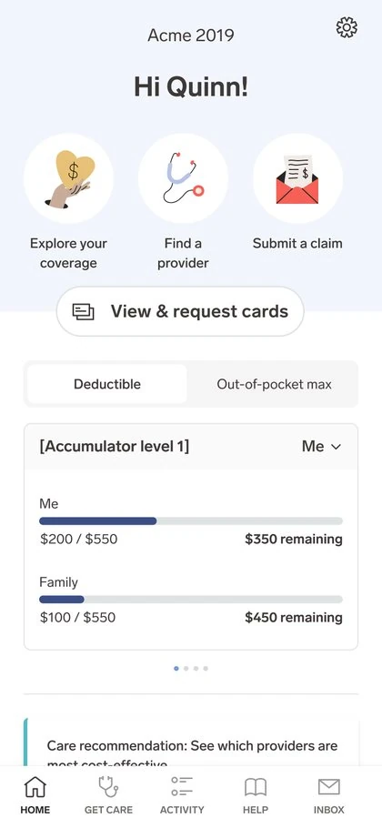
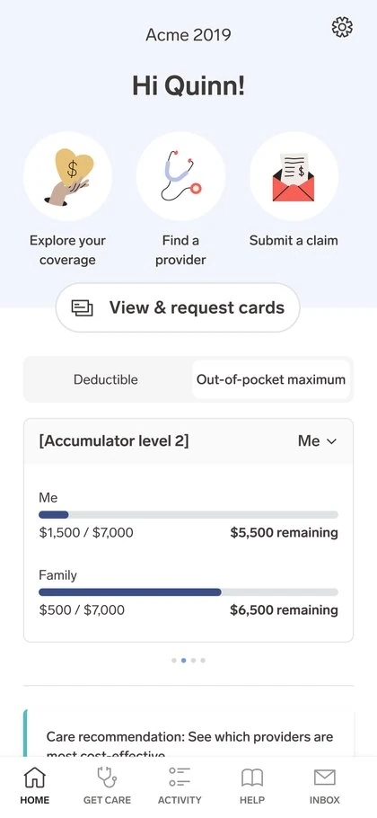
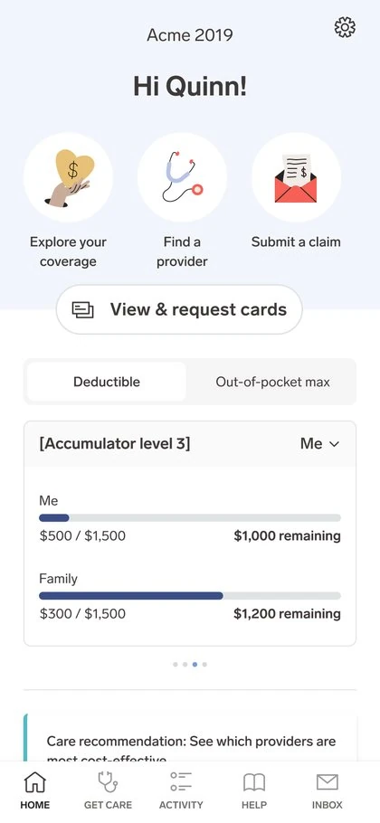
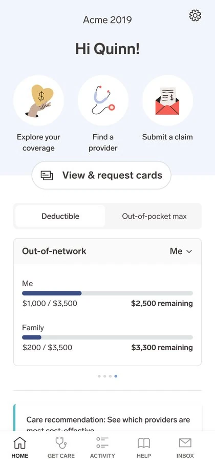
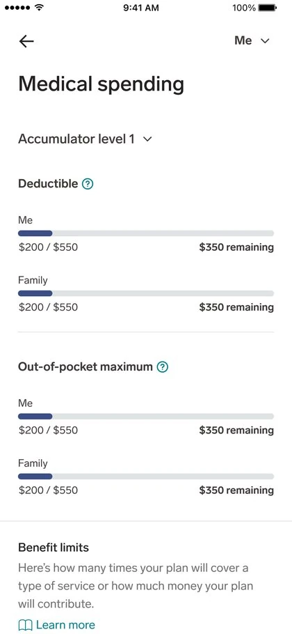
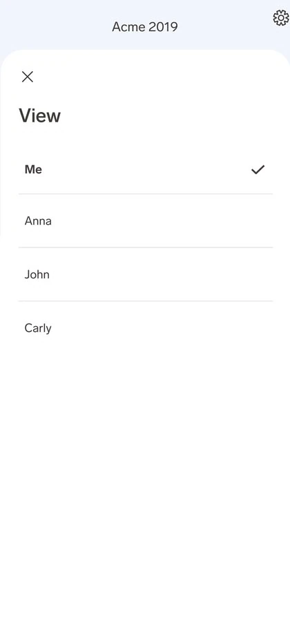

Fitting every deductible tier into one thumb-swipe.
Members on multi-tier health plans have separate deductible and out-of-pocket buckets for each tier of their plan — sometimes four of them. The home screen could only ever show one. This feature let members swipe through every tier, toggle between deductible and out-of-pocket max, and check any dependent's numbers, all without leaving the home screen.
How might we show every accumulator tier a multi-tier plan has, for the member and their dependents, without turning the home screen into a spreadsheet?
A lot of numbers, not a lot of screen
A multi-tier plan applies its deductible and out-of-pocket max in stages — Level 1, Level 2, Level 3, and out-of-network each have their own bucket. Each bucket has two dimensions (the member and their family) and two metrics (deductible and out-of-pocket max). Multiply that out and a single member could have well over a dozen individual numbers that all needed a home on a card designed for a phone screen.
Swipe instead of stack
Rather than stacking every tier vertically or burying them behind extra taps, the card became a horizontal carousel — one tier per swipe, with dot pagination showing where you are and how many are left.
Swiping through a plan's tiers
The same card, at four different tiers, plus the full detail page and the member switcher underneath it.






What this project taught me
The real constraint here wasn't visual — it was informational. The instinct with dense data is to either cram it all in or hide most of it behind a tap. Neither felt right for something as high-stakes as "how much will this cost me." Swiping let every number stay reachable without ever asking the member to read more than one tier at a time.
Reusing the same member switcher on the card and the detail page also reinforced something I keep coming back to: consistency isn't just visual polish, it's what makes a small feature feel like it was designed as one thing instead of three.